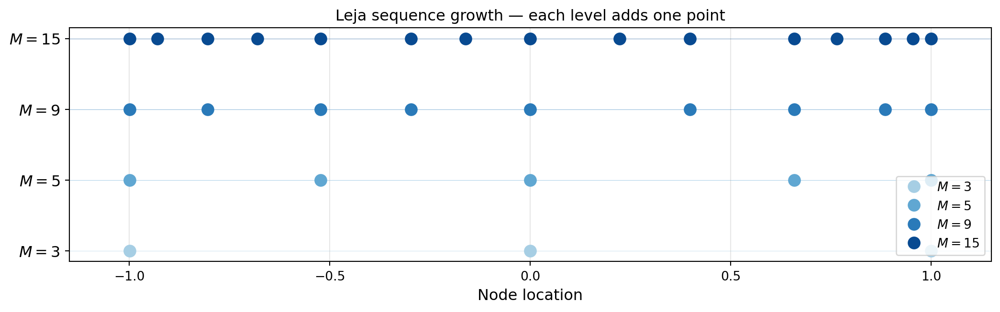
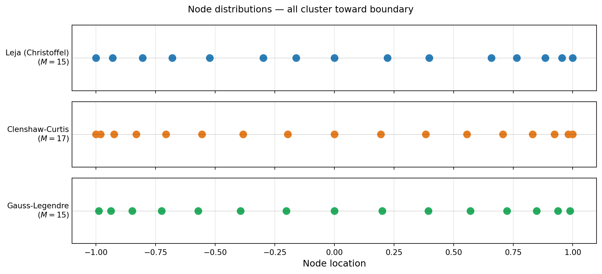
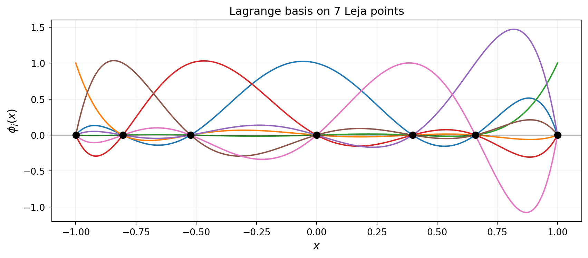
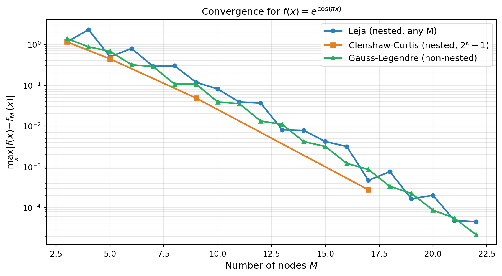
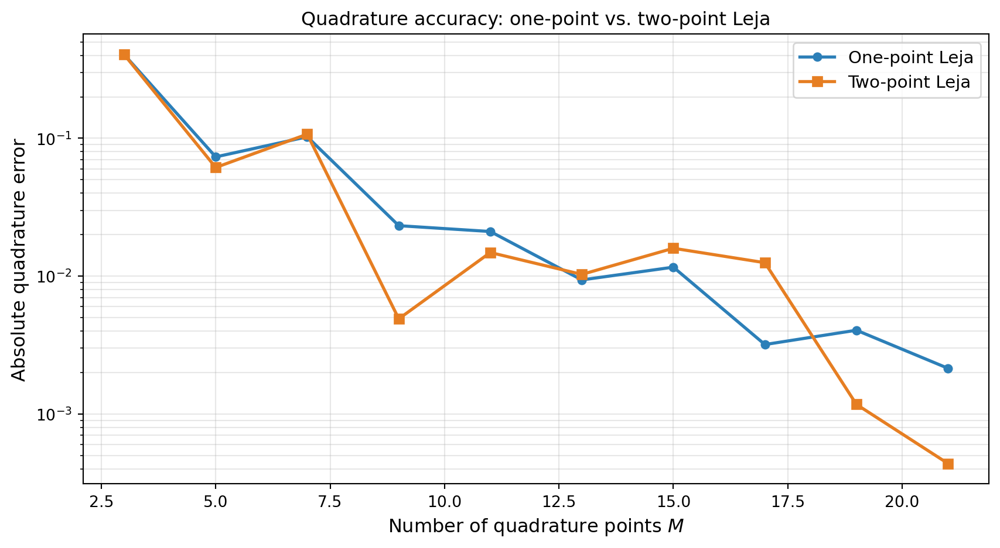
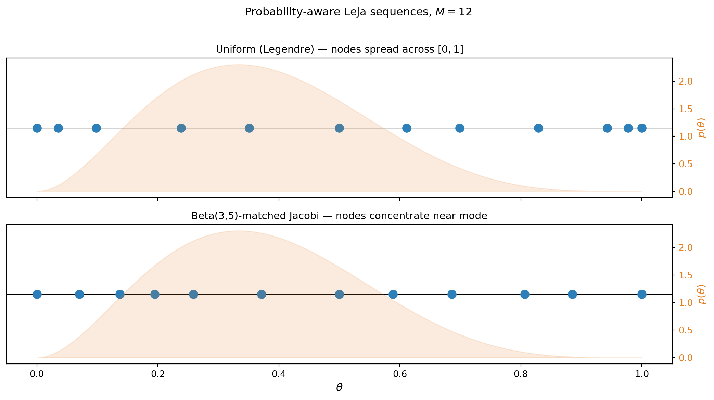

import numpy as np
np.random.seed(42)
import matplotlib.pyplot as plt
from pyapprox.util.backends.numpy import NumpyBkd
from pyapprox.surrogates.affine.univariate import (
JacobiPolynomial1D,
LegendrePolynomial1D,
GaussQuadratureRule,
LagrangeBasis1D,
)
from pyapprox.surrogates.affine.univariate.globalpoly import (
ClenshawCurtisQuadratureRule,
)
from pyapprox.surrogates.affine.leja import (
LejaSequence1D,
ChristoffelWeighting,
)
from pyapprox.surrogates.sparsegrids import LejaLagrangeFactory
bkd = NumpyBkd()Leja Sequences: Nested Points for Adaptive Interpolation
PyApprox Tutorial Library
Construct Leja sequences via greedy determinant maximization, understand Christoffel weighting, compare one-point vs. two-point optimization, and compare Leja vs. Gauss vs. CC for interpolation accuracy.
TipDownload Notebook
Learning Objectives
After completing this tutorial, you will be able to:
- Explain why nestedness matters for adaptive algorithms and sparse grids
- Define Leja points via greedy weighted determinant maximization
- Understand the role of the Christoffel function as a weighting
- Construct Leja sequences using
LejaSequence1DwithChristoffelWeighting - Compare one-point vs. two-point optimized Leja sequences for improved quadrature accuracy
- Compare Leja vs. Gauss vs. Clenshaw-Curtis interpolation convergence
- Build probability-aware Leja sequences for non-uniform distributions
Prerequisites
Complete Lagrange Interpolation before this tutorial. You should understand Lagrange basis polynomials and why point placement affects convergence.
Setup
Why Nestedness Matters
Both Gauss-Legendre and Clenshaw-Curtis rules produce accurate quadrature, but they are designed to be used at a fixed number of points \(M\). When we want to increase accuracy by adding more points, neither rule naturally reuses existing evaluations: a Gauss-\(M\) grid and a Gauss-\((M+2)\) grid share no points.
For adaptive algorithms that refine iteratively — and for sparse grids (Tutorial 6) that build approximations by combining sub-grids at different levels — nested point sets are essential. A family of point sets \(\mathcal{Z}_1 \subset \mathcal{Z}_2 \subset \mathcal{Z}_3 \subset \cdots\) is nested if every set at level \(\ell\) contains all points from level \(\ell - 1\). This means function evaluations from coarser levels are never wasted when the grid is refined.
Clenshaw-Curtis nodes are nested for the specific sequence \(M = 2^k + 1\), but this restricts how we can grow the grid. Leja sequences are a flexible alternative: they are nested by construction, they grow one point at a time, and they can be adapted to any probability measure.
Leja Points: Greedy Determinant Maximization
Given an existing set of \(M\) points \(\mathcal{Z}_M = \{z^{(1)}, \ldots, z^{(M)}\}\) on \([a, b]\), the next Leja point is chosen to maximize the product of distances to all existing points, weighted by a function \(v(z)\):
\[ z^{(M+1)} = \underset{z \in [a, b]}{\operatorname{argmax}}\; v(z) \prod_{n=1}^{M} \left\lvert z - z^{(n)} \right\rvert. \]
This is equivalent to maximizing the determinant of the Vandermonde matrix of the extended point set, and it ensures the new point is as far as possible (in a weighted sense) from all existing nodes — preventing clustering and controlling the Lebesgue constant.
The first point \(z^{(1)}\) is typically chosen as the maximum of \(v\) alone; subsequent points are selected greedily.

The key observation is that the 3-point sequence is a subset of the 15-point sequence. Any function values already computed at the 3-point level are reused exactly when the sequence grows to 15 points.
LejaSequence1D and ChristoffelWeighting
LejaSequence1D implements the greedy Leja construction for any distribution. It takes:
- A basis (orthogonal polynomial, e.g.
JacobiPolynomial1Dfor uniform,LegendrePolynomial1D) - A weighting (e.g.
ChristoffelWeightingwhich uses the Christoffel function \(v(z) = \sqrt{K_M(z, z)}\), where \(K_M\) is the reproducing kernel) - Bounds for the domain
The Christoffel function weighting makes the resulting points near-optimal for polynomial interpolation with respect to the target probability measure.
from pyapprox.tutorial_figures._interpolation import plot_node_distribution
# Build a Leja sequence on [-1, 1] with Christoffel weighting
poly_leg = LegendrePolynomial1D(bkd)
poly_leg.set_nterms(30)
weighting = ChristoffelWeighting(bkd)
leja = LejaSequence1D(bkd, poly_leg, weighting, bounds=(-1.0, 1.0))
# Get 15 Leja points
M = 15
nodes_leja, weights_leja = leja.quadrature_rule(M)
# Compare node distributions
cc_rule = ClenshawCurtisQuadratureRule(bkd, store=True)
nodes_cc, _ = cc_rule(17) # 17 CC points (nearest valid CC size >= 15)
gauss_rule = GaussQuadratureRule(poly_leg, store=True)
nodes_gauss, _ = gauss_rule(M)
leja_np = bkd.to_numpy(nodes_leja).ravel()
cc_np = bkd.to_numpy(nodes_cc).ravel()
gauss_np = bkd.to_numpy(nodes_gauss).ravel()
fig, axs = plt.subplots(3, 1, figsize=(11, 5), sharex=True)
plot_node_distribution(leja_np, M, cc_np, 17, gauss_np, M, axs)
plt.suptitle("Node distributions — all cluster toward boundary", fontsize=12)
plt.tight_layout()
plt.show()
Nestedness verification
Leja sequences are nested by construction: the first \(M\) points of an \(N\)-point sequence (\(N > M\)) are identical to the \(M\)-point sequence.
# Verify nestedness
nodes5, _ = leja.quadrature_rule(5)
nodes10, _ = leja.quadrature_rule(10)
nodes15, _ = leja.quadrature_rule(15)
n5 = bkd.to_numpy(nodes5).ravel()
n10 = bkd.to_numpy(nodes10).ravel()
n15 = bkd.to_numpy(nodes15).ravel()
assert np.allclose(n5, n10[:5]), "5-pt not nested in 10-pt"
assert np.allclose(n10, n15[:10]), "10-pt not nested in 15-pt"Using LagrangeBasis1D with Leja Points
LagrangeBasis1D accepts any quadrature rule callable with signature (npoints) → (samples, weights). We can pass leja.quadrature_rule directly:
from pyapprox.tutorial_figures._interpolation import plot_lagrange_on_leja
# Build a Lagrange basis on Leja points
basis_leja = LagrangeBasis1D(bkd, leja.quadrature_rule)
basis_leja.set_nterms(7)
# Evaluate at a fine grid
x_eval = bkd.array(np.linspace(-1, 1, 300).reshape(1, -1))
phi_leja = bkd.to_numpy(basis_leja(x_eval)) # (300, 7)
nodes_7, _ = basis_leja.quadrature_rule()
nodes_7_np = bkd.to_numpy(nodes_7).ravel()
x_plot = np.linspace(-1, 1, 300)
fig, ax = plt.subplots(figsize=(9, 4))
plot_lagrange_on_leja(x_plot, phi_leja, nodes_7_np, 7, ax)
plt.tight_layout()
plt.show()
LejaLagrangeFactory for Sparse Grids
In the sparse grid framework (Tutorial 6), each dimension of the grid needs a factory object that produces the 1D basis at any requested level. LejaLagrangeFactory wraps the Leja sequence construction into this interface.
# LejaLagrangeFactory takes a marginal and backend;
# it lazily constructs a LejaSequence1D and wraps it
# as a LagrangeBasis1D.
from pyapprox.probability.univariate.uniform import UniformMarginal
marginal = UniformMarginal(-1.0, 1.0, bkd)
factory = LejaLagrangeFactory(marginal, bkd)
# The factory creates a LagrangeBasis1D backed by a Leja sequence
basis_from_factory = factory.create_basis()
basis_from_factory.set_nterms(5)
nodes_fac, weights_fac = basis_from_factory.quadrature_rule()Convergence Comparison
For a uniform distribution the three families — Leja, Clenshaw-Curtis, and Gauss — all achieve exponential convergence for analytic functions. Leja sequences typically match CC accuracy for moderate \(M\) while retaining the flexibility to be grown one point at a time.
from pyapprox.tutorial_figures._interpolation import plot_leja_convergence
def f_test(x):
return np.exp(np.cos(np.pi * x))
x_ref = np.linspace(-1.0, 1.0, 2000)
x_ref_bkd = bkd.array(x_ref.reshape(1, -1))
true_ref = f_test(x_ref)
# Build bases for each method
basis_leja_conv = LagrangeBasis1D(bkd, leja.quadrature_rule)
basis_gauss_conv = LagrangeBasis1D(bkd, gauss_rule)
Ms = list(range(3, 23))
err_leja, err_gauss = [], []
# CC only works for M = 1, 3, 5, 9, 17 — collect valid sizes
cc_Ms = [3, 5, 9, 17]
err_cc = []
for M in Ms:
# Leja
basis_leja_conv.set_nterms(M)
nd_l, _ = basis_leja_conv.quadrature_rule()
nd_l_np = bkd.to_numpy(nd_l).ravel()
phi_l = bkd.to_numpy(basis_leja_conv(x_ref_bkd))
interp_l = phi_l @ f_test(nd_l_np)
err_leja.append(np.max(np.abs(true_ref - interp_l)))
# Gauss
basis_gauss_conv.set_nterms(M)
nd_g, _ = basis_gauss_conv.quadrature_rule()
nd_g_np = bkd.to_numpy(nd_g).ravel()
phi_g = bkd.to_numpy(basis_gauss_conv(x_ref_bkd))
interp_g = phi_g @ f_test(nd_g_np)
err_gauss.append(np.max(np.abs(true_ref - interp_g)))
for M in cc_Ms:
basis_cc_conv = LagrangeBasis1D(bkd, cc_rule)
basis_cc_conv.set_nterms(M)
nd_c, _ = basis_cc_conv.quadrature_rule()
nd_c_np = bkd.to_numpy(nd_c).ravel()
phi_c = bkd.to_numpy(basis_cc_conv(x_ref_bkd))
interp_c = phi_c @ f_test(nd_c_np)
err_cc.append(np.max(np.abs(true_ref - interp_c)))
fig, ax = plt.subplots(figsize=(9, 5))
plot_leja_convergence(Ms, err_leja, cc_Ms, err_cc, err_gauss, ax)
plt.tight_layout()
plt.show()
All three methods converge exponentially for this analytic function. The advantage of Leja over Gauss is not accuracy per se, but flexibility: Leja sequences can be extended by a single point without discarding any existing evaluations.
Two-Point Optimized Leja Sequences
The standard Leja algorithm adds one point at a time, choosing it to maximize a one-dimensional objective. A natural improvement is to optimize two points simultaneously: given a sequence of \(M\) points, find the pair \((z^{(M+1)}, z^{(M+2)})\) that jointly maximizes the determinant of the extended Vandermonde-like matrix.
The TwoPointLejaObjective solves a 2D optimization problem at each step, maximizing the squared determinant of a \(2 \times 2\) weighted residual matrix:
\[ (z^{(M+1)}, z^{(M+2)}) = \underset{z_1, z_2 \in [a,b]}{\operatorname{argmax}} \; \left[\det \begin{pmatrix} r_1(z_1) & r_2(z_1) \\ r_1(z_2) & r_2(z_2) \end{pmatrix}\right]^2, \]
where \(r_1, r_2\) are the weighted residuals of the next two basis polynomials after projection onto the existing sequence.
This produces better-conditioned sequences and more accurate quadrature rules than one-point optimization, at the cost of solving a 2D optimization problem instead of two 1D problems.
Constructing a Two-Point Leja Sequence
Pass objective_class=TwoPointLejaObjective to LejaSequence1D:
from pyapprox.surrogates.affine.leja import TwoPointLejaObjective
# Fresh polynomial and weighting objects for each sequence
poly_1pt = LegendrePolynomial1D(bkd)
poly_1pt.set_nterms(30)
poly_2pt = LegendrePolynomial1D(bkd)
poly_2pt.set_nterms(30)
# One-point Leja (default)
leja_1pt = LejaSequence1D(
bkd, poly_1pt, ChristoffelWeighting(bkd), bounds=(-1.0, 1.0),
)
# Two-point optimized Leja
leja_2pt = LejaSequence1D(
bkd, poly_2pt, ChristoffelWeighting(bkd), bounds=(-1.0, 1.0),
objective_class=TwoPointLejaObjective,
)
M = 15 # two-point starts from 1 initial point + pairs: valid sizes are 1, 3, 5, 7, ...
nodes_1pt, weights_1pt = leja_1pt.quadrature_rule(M)
nodes_2pt, weights_2pt = leja_2pt.quadrature_rule(M)Quadrature Accuracy Comparison
Two-point optimization typically produces more accurate quadrature weights, especially for moderate \(M\):
from pyapprox.tutorial_figures._interpolation import plot_two_point_quadrature
def f_quad_test(x):
"""Test integrand: Runge-like function."""
return 1.0 / (1.0 + 25.0 * x**2)
# Exact: (1/2) * integral of 1/(1+25x^2) over [-1,1] = arctan(5)/5
exact_val = np.arctan(5.0) / 5.0
# Two-point starts from 1 initial point then adds pairs: valid sizes are 1, 3, 5, 7, ...
Ms_quad = np.arange(3, 22, 2) # odd numbers
err_1pt, err_2pt = [], []
for M in Ms_quad:
nd1, wt1 = leja_1pt.quadrature_rule(M)
nd2, wt2 = leja_2pt.quadrature_rule(M)
nd1_np, wt1_np = bkd.to_numpy(nd1[0]), bkd.to_numpy(wt1[:, 0])
nd2_np, wt2_np = bkd.to_numpy(nd2[0]), bkd.to_numpy(wt2[:, 0])
err_1pt.append(abs(wt1_np @ f_quad_test(nd1_np) - exact_val))
err_2pt.append(abs(wt2_np @ f_quad_test(nd2_np) - exact_val))
fig, ax = plt.subplots(figsize=(9, 5))
plot_two_point_quadrature(Ms_quad, err_1pt, err_2pt, ax)
plt.tight_layout()
plt.show()
NoteWhen to Use Two-Point Optimization
Two-point Leja sequences are the default in PyApprox’s sparse grid framework because they produce more stable quadrature weights. The extra cost of solving a 2D optimization (vs. two 1D optimizations) is negligible compared to the function evaluations saved by better accuracy. Use TwoPointLejaObjective whenever quadrature accuracy matters — which is most practical applications.
Probability-Aware Leja for Non-Uniform Distributions
When the variable \(\theta\) follows a non-uniform distribution, we want the interpolant to be most accurate in the high-probability region. By choosing the orthogonal polynomial basis matched to the distribution, LejaSequence1D automatically concentrates nodes where the probability density is large.
For a \(\text{Beta}(\alpha, \beta)\) distribution on \([0, 1]\), the matched orthogonal polynomials are the Jacobi polynomials with parameters \((\beta - 1, \alpha - 1)\).
from scipy.stats import beta as beta_dist
from pyapprox.tutorial_figures._interpolation import plot_leja_beta
alpha_s, beta_s = 3.0, 5.0
rv_beta = beta_dist(alpha_s, beta_s)
# Uniform Leja on [-1, 1] (Legendre = Jacobi(0,0))
poly_uniform = JacobiPolynomial1D(0.0, 0.0, bkd)
poly_uniform.set_nterms(30)
leja_uniform = LejaSequence1D(bkd, poly_uniform, ChristoffelWeighting(bkd), bounds=(-1.0, 1.0))
# Beta(3,5) Leja on [-1, 1] using matched Jacobi polynomials
# Jacobi params: (beta_param - 1, alpha_param - 1) = (4, 2)
poly_beta = JacobiPolynomial1D(beta_s - 1, alpha_s - 1, bkd)
poly_beta.set_nterms(30)
leja_beta = LejaSequence1D(bkd, poly_beta, ChristoffelWeighting(bkd), bounds=(-1.0, 1.0))
M = 12
nodes_uni, _ = leja_uniform.quadrature_rule(M)
nodes_beta_leja, _ = leja_beta.quadrature_rule(M)
# Map to [0, 1] for comparison with Beta PDF
nodes_uni_01 = (bkd.to_numpy(nodes_uni).ravel() + 1) / 2
nodes_beta_01 = (bkd.to_numpy(nodes_beta_leja).ravel() + 1) / 2
x_plot = np.linspace(0, 1, 300)
fig, axs = plt.subplots(2, 1, figsize=(11, 6), sharex=True)
plot_leja_beta(nodes_uni_01, nodes_beta_01, M, x_plot, rv_beta, axs)
plt.suptitle(f"Probability-aware Leja sequences, $M = {M}$", fontsize=12, y=1.01)
plt.tight_layout()
plt.show()
The Beta-matched sequence places more nodes in the region where the Beta(3,5) distribution has its mass. This improves the interpolation accuracy of \(\mathbb{E}_\theta[f(\theta)]\) relative to a uniform Leja or CC sequence of the same size.
Key Takeaways
- Leja sequences are nested by construction: each point is added greedily and never discarded, so function evaluations are always reused as the sequence grows.
- The next Leja point maximizes a weighted distance product \(v(z) \prod_n |z - z^{(n)}|\); the Christoffel function weighting makes this near-optimal for polynomial interpolation.
- Two-point optimized Leja (
TwoPointLejaObjective) adds points in pairs by maximizing a 2D determinant, producing more accurate quadrature weights than sequential one-point optimization. - For analytic functions and a uniform distribution, Leja sequences match Clenshaw-Curtis in convergence rate while being more flexible (one point at a time, any growth pattern).
LejaLagrangeFactorypackages the Leja construction for direct use in sparse grid algorithms viacreate_basis_factories(..., basis_type="leja").- Non-uniform distributions are handled by choosing
JacobiPolynomial1Dwith parameters matched to the distribution, concentrating nodes in high-probability regions.
Exercises
NoteExercises
Nesting verification. Build a 5-point and a 10-point Leja sequence from the same seed. Verify that every point of the 5-point sequence appears in the 10-point sequence. Does this hold if you use Gauss-Legendre points instead?
Lebesgue constant. The Lebesgue constant \(\Lambda_M = \max_{x \in [-1,1]} \sum_j |\phi_j(x)|\) measures worst-case interpolation amplification. Compute \(\Lambda_M\) for \(M = 5, 10, 15\) for equidistant, CC, and Leja nodes. Which grows slowest?
Non-uniform convergence. Generate a Leja sequence matched to \(\theta \sim \text{Beta}(2, 8)\) and interpolate \(f(\theta) = \sin(10\theta)\). Compare the error in \(\mathbb{E}_\theta[f(\theta)]\) against a uniform Leja sequence of the same size.
Christoffel weighting. Replace the Christoffel weighting with
PDFWeightingand compare the resulting node distribution. How does convergence change?
Next Steps
- Tensor Product Interpolation — Extend 1D interpolation to multiple dimensions using tensor products
- Isotropic Sparse Grids — Use Leja or CC nodes in the Smolyak combination scheme